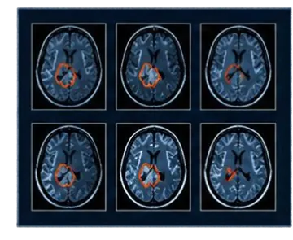
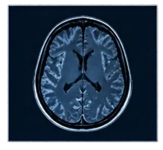
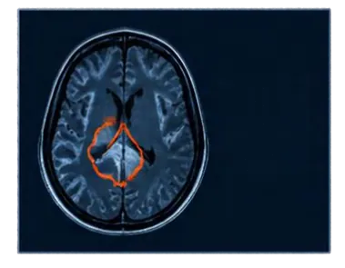
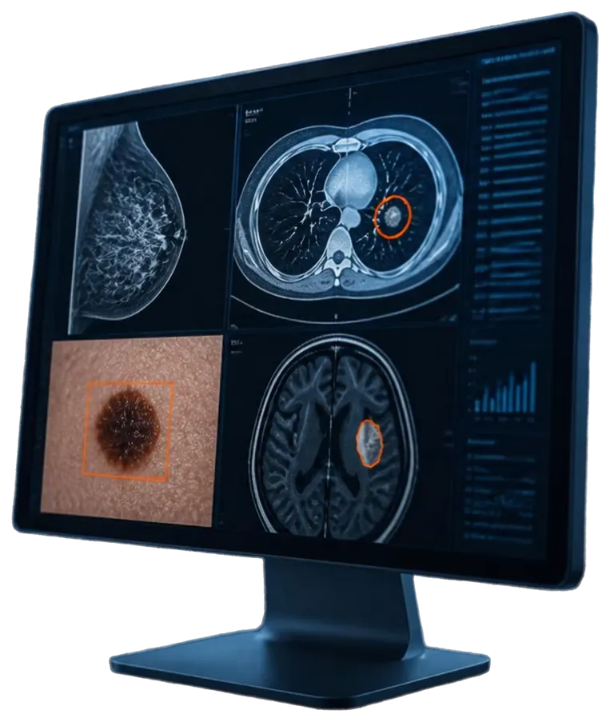
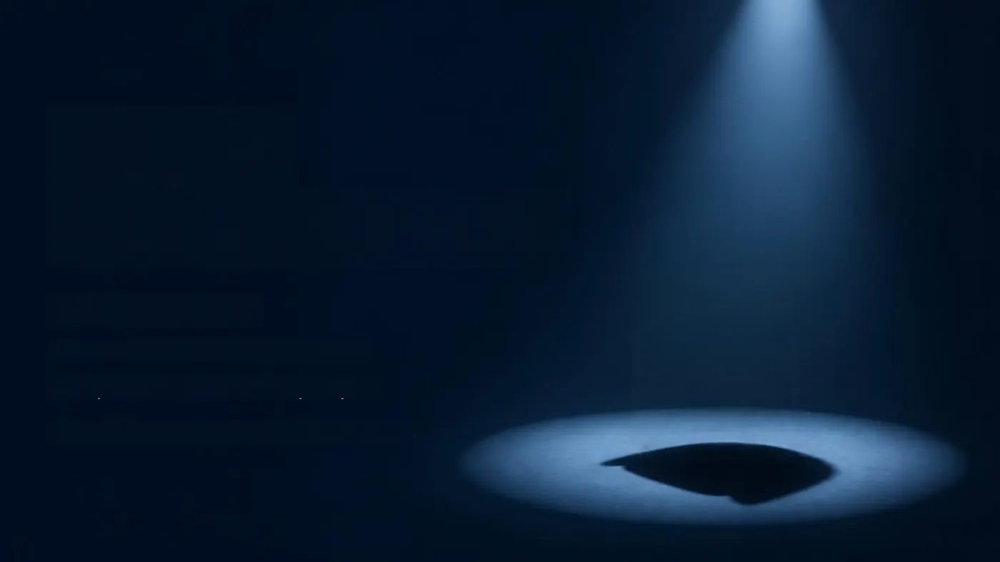
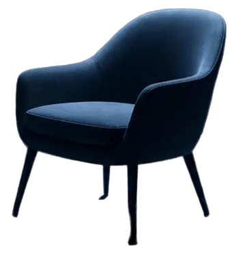

Radiologie · Oncologie · Éthique
L’IAdans l’imageriemédicale
Détection assistée de tumeurs,
fiabilité et questions éthiques
L’intelligence artificielle peut-elle rendre le diagnostic des cancers plus fiable, et à quelles conditions ?
Sommaire
- 01Pourquoi l’IA en radiologie ?
- 02Comment l’IA « voit » une image ?
- 03Usages concrets aujourd’hui
- 04Ce que disent les études
- 05Les limites techniques
- 06Les questions éthiques
- 07Conclusion
01
Pourquoi l’IAen radiologie ?
- Explosion du volume d’images à analyser
- Pénurie de radiologues
- Fatigue et risque d’erreur humaine
- Un diagnostic plus précoce pour de meilleures chances de guérison des cancers
02
Comment l’IA « voit » une image ?
01Données annotées par des médecins
02Apprentissage deep learning (CNN)
03Analyse d’une nouvelle image
04Score de suspicion + zone entourée
JEU D’ENTRAÎNEMENT · ANNOTÉ



AXIAL · T1 · 512 × 512
Bords H
Bords V
Contours
Lissage
Seuil
Relief
Score de suspicion+ zone entourée
L’IA assiste,
elle ne remplace pas
le diagnostic médical.
Le radiologue conserve la décision finale en s’appuyant sur son expertise et le contexte clinique.
03
Usages concretsaujourd’hui
- Cancer du sein : mammographies assistées
- Cancer du poumon : détection des nodules sur scanners
- Cancer de la peau : analyse des grains de beauté
- Autres usages : fractures, AVC, embolies
- Des entreprises françaises : Therapixel, Glemmer
- Marquage CE obligatoire pour les dispositifs médicaux IA

ROI 01 · SEIN
ROI 02 · POUMON
ROI 03 · PEAU
ROI 04 · CERVEAU
ZOOM ×1,0
04
Ce que disent les études
+20 %de cancers détectésESSAI MASAI, SUÈDE, 2023
Lecture std.100
Avec IA120
−44 %de charge de lectureESSAI MASAI, SUÈDE, 2023
Étude Google Health (Nature, 2020) :moins de fausses alertes et erreurs
La meilleure performance :IA+médecin
05
Les limitestechniques
- Biais dans les données d’apprentissage
- Effet « boîte noire » et manque d’explicabilité
- Variabilité du matériel d’imagerie
- Biais d’automatisation : le médecin suit la machine même si elle se trompe
06
Les questionséthiques
01Qui est responsable en cas d’erreur liée à l’IA ?
02À qui appartiennent les données patients ? (RGPD)
03Le patient est-il informé de l’utilisation de l’IA dans son diagnostic ?
04Quelles règles encadrent l’IA médicale ? (AI Act européen, classification « à haut risque »)
07
Conclusionpartielle
Un assistant, pas un remplaçant :
synthèse des conditions d’une IA fiable.
- Résultats prometteurs mais encadrés
- Des données variées et représentatives
- Un contrôle humain indispensable
- Un cadre légal clair et respecté


Merci.
Des questions ?
Merci pour votre attention
IA-IMG · ONCO
SÉQ. 01/10
ECG · RYTHME SINUSAL
WL 40 · WW 400
L’IA dans l’imagerie médicale
T+ 00:00
512 × 512 · 3,0 mm
DÉFILEMENT AUTOMATIQUE · ≈ 4 MIN 30
ESPACE = PAUSE · ← → NAVIGUER · F = PLEIN ÉCRAN · M = SON